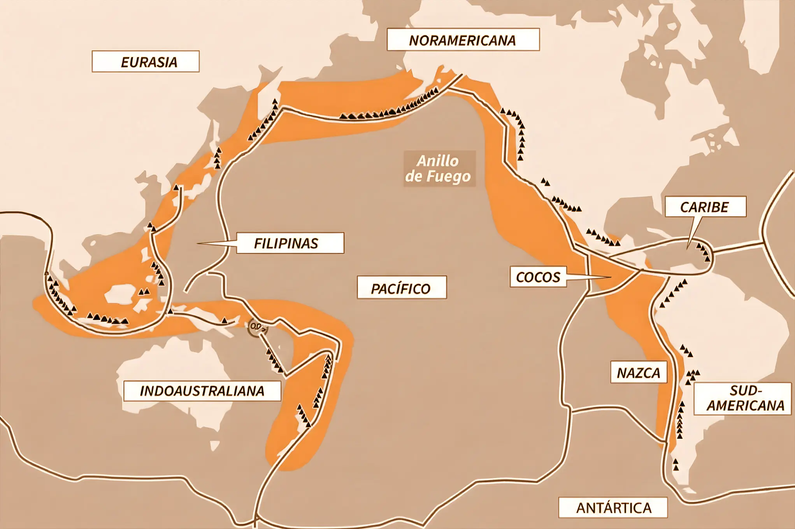

Cronología
Sísmica
Revisión de los 5 sismos más devastadores e históricos en Indonesia ordenados cronológicamente, con detalles de su intensidad y fecha.
¡Pasa el cursor sobre las imágenes!
➜ Sigue bajando
Indonesia está situada en el sudeste asiático, entre el océano Índico y el océano Pacífico; es el mayor archipiélago del mundo, compuesto por más de 17,000 islas, extendiéndose aproximadamente 5,120 kilómetros de este a oeste y 1,760 kilómetros de norte a sur. El país limita al norte con Malasia, al este con Papúa Nueva Guinea y al sureste con Timor Oriental.
Indonesia se encuentra directamente sobre el Anillo de Fuego del Pacífico, una zona sísmica y volcánica extremadamente activa donde confluyen varias placas tectónicas, esto hace que la región sea extremadamente susceptible a los terremotos. Yace sobre la convergencia entre las placas de Eurasia, Indoaustraliana, Pacífica y del mar de Filipinas; esta posición geográfica hace que el país albergue cientos de volcanes —muchos de ellos todavía activos— y experimente una intensa actividad tectónica, que ha moldeado tanto su relieve montañoso como la fertilidad de sus suelos y la dinámica cultural y social de sus habitantes.
Debido a su ubicación en pleno Anillo de Fuego del Pacífico —una zona donde varias placas tectónicas convergen y generan una intensa actividad sísmica— Indonesia ha sido escenario de algunos de los terremotos más poderosos y devastadores registrados en la historia moderna. Esta interacción constante entre placas ha dado origen a eventos sísmicos que no solo han transformado el paisaje del archipiélago, sino también la vida de millones de personas. A continuación, se presenta una línea de tiempo que recoge los terremotos más significativos asociados a esta actividad tectónica, mostrando cómo cada uno de ellos ha marcado hitos importantes en la comprensión y evolución del riesgo sísmico en la región.
(Desliza hacia abajo para recorrer la historia)
Revisión de los 5 sismos más devastadores e históricos en Indonesia ordenados cronológicamente, con detalles de su intensidad y fecha.
Este sismo en el Mar de Banda causó daños severos y generó un tsunami regional, siendo uno de los eventos más antiguos y devastadores registrados en Indonesia.
El terremoto de Sumatra-Andamán fue el más poderoso registrado en Indonesia, con una magnitud de 9.1. Originó un tsunami masivo que causó la muerte de más de 230,000 personas, dejando una destrucción extensa en la región costera de Aceh y otras áreas cercanas.
Otro gran terremoto en Sumatra con una magnitud de 8.7 que dejó 547 muertos y miles de heridos y desaparecidos, causando daños graves en vivienda e infraestructura.
Un terremoto más pequeño en magnitud pero igual de devastador, causó más de 6,200 muertos, 20,000 heridos y desplazó a 340,000 personas en la isla de Java.
Este sismo fue acompañado por un tsunami y licuefacción del suelo que causaron graves daños y más de 800 muertos, principalmente en la ciudad de Palu, y destacó por su complejidad en efectos secundarios como deslizamientos e inundaciones.
Continúa bajando para ver los datos actuales.
En el marco de su constante actividad tectónica, Indonesia continúa registrando movimientos sísmicos de diversa magnitud, reflejo directo de su ubicación sobre el Anillo de Fuego del Pacífico. En los últimos 30 días, el país ha experimentado una serie de eventos significativos que ilustran la intensidad y frecuencia de la actividad sísmica en la región. A continuación, se presenta una tabla con los registros más recientes, organizada para ofrecer una visión clara y actualizada de los sismos detectados durante este periodo.
| place | time | mag | tsunami |
|---|
Registros sobre 3.9 M del último mes, comparado con Japón y Rusia
En suma, los registros recientes de sismos en Indonesia no sólo reflejan la intensa dinámica tectónica de la zona del Anillo de Fuego, sino también la importancia de asumir una cultura del riesgo de desastres que vaya más allá del fatalismo. Tal como destaca la campaña de la UNDRR #LosDesastresNoSonNaturales, es esencial reconocer que los desastres no ocurren simplemente por la fuerza de la naturaleza, sino que se agravan por decisiones humanas. Factores como una planificación urbana inadecuada, la vulnerabilidad social, la falta de infraestructura resistente y una gobernanza insuficiente incrementan significativamente los impactos cuando se producen eventos sísmicos.
Reconocer que los desastres no son simples fenómenos “naturales” nos permite generar políticas, educación y alianzas que aborden las causas subyacentes del riesgo, reduciendo así la exposición y fortaleciendo la resiliencia. Solo con esa mirada integrada podremos transformar la información sísmica —como la que acabamos de organizar— en acción preventiva, y avanzar hacia sociedades más seguras y conscientes de su capacidad para mitigar el impacto de futuros eventos.
USGS Earthquake Hazards Program:
https://earthquake.usgs.gov/
Britannica - 2004 Indian Ocean Tsunami:
https://www.britannica.com/event/Indian-Ocean-tsunami-of-2004
Wikipedia - Indonesia:
https://es.wikipedia.org/wiki/Indonesia
Terremoto Indonesia: Los mayores seísmos de su historia: https://www.lavanguardia.com/internacional/20120411/54284301541/terremoto-indonesia-mayores-seismos-historia.html
Terremoto de Lombok de agosto de 2018: https://es.wikipedia.org/wiki/Terremoto_de_Lombok_de_agosto_de_2018
CNN - 20 años del tsunami más mortífero de la historia:
https://cnnespanol.cnn.com/2024/12/26/mundo/fotos-tsunami-oceano-indico-2004-trax
Los 14 grandes sismos que azotaron Indonesia en los últimos 20 años:
https://www.latercera.com/noticia/los-14-grandes-sismos-que-azotaron-indonesia-en-los-ultimos-20-anos/
De Chile a Indonesia: estos son los terremotos de mayor magnitud de la historia:
https://www.elconfidencial.com/mundo/2025-03-28/chile-indonesia-terremotos-mayor-magnitud-historia_4096687/
Los terremotos más devastadores que han sacudido Indonesia desde 2004:
https://www.infobae.com/america/mundo/2018/08/06/los-terremotos-mas-devastadores-que-han-sacudido-indonesia-desde-2004/